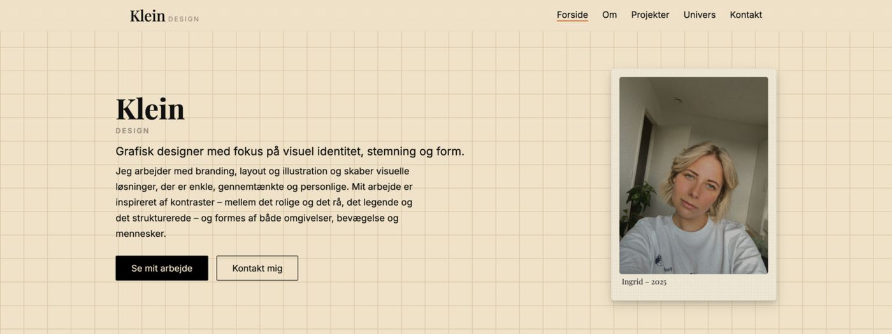
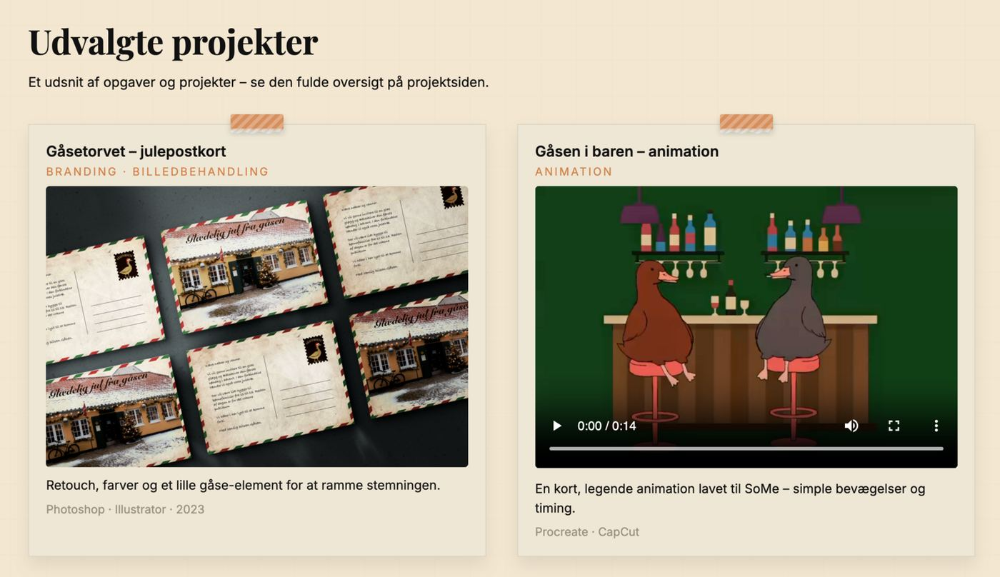
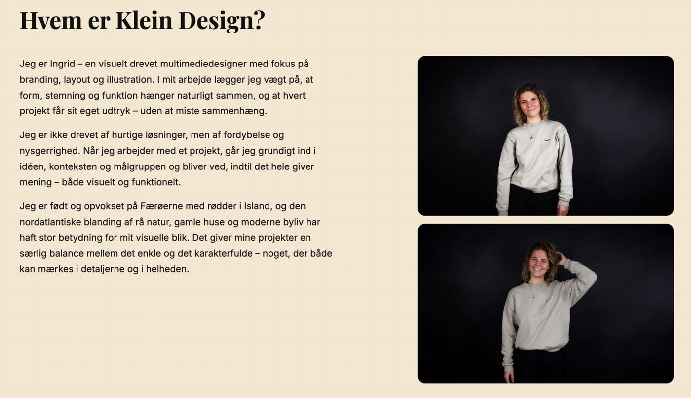
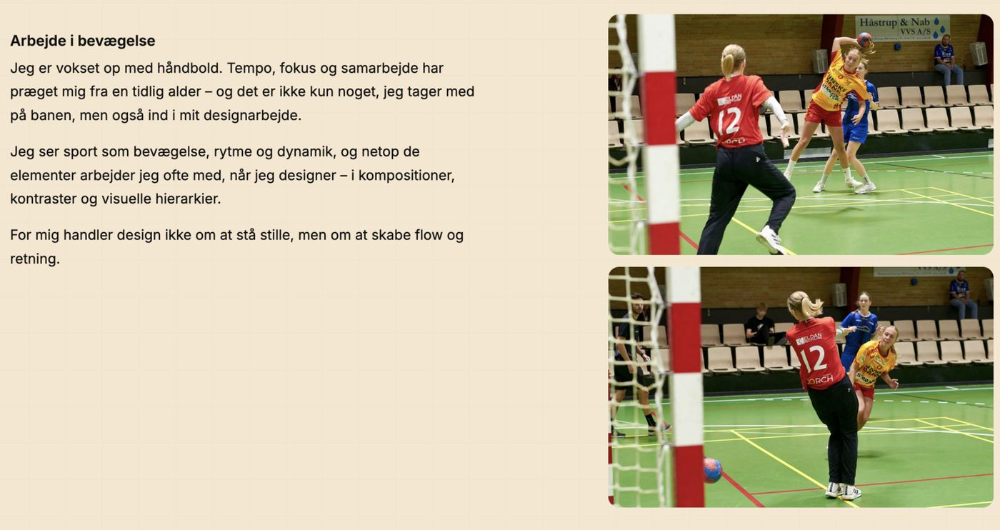

Arbejdet med Klein Design har givet mig en markant dybere forståelse for sammenhængen mellem design, kode og brugeroplevelse, og hvordan disse elementer ikke kan betragtes hver for sig, men skal fungere i samspil for at skabe en velfungerende digital løsning. Projektet har tydeliggjort for mig, at selv små designvalg – såsom farver, typografi, spacing og struktur – kan have stor betydning for, hvordan en bruger oplever og forstår en hjemmeside. Jeg har udviklet mig både fagligt og personligt gennem processen. Fagligt har jeg opnået større sikkerhed i frontend-udvikling og i at omsætte designidéer til fungerende kode. Samtidig har jeg fået en bedre forståelse for, hvordan teori fra undervisningen, såsom designprincipper, mobile first og brugercentreret design, anvendes i praksis. Projektet har vist mig, at teori først virkelig giver mening, når den afprøves og udfordres i konkrete løsninger.
1. Semester
KleinDesign
Klein Design
Eksamens-projekt
Dette projekt omhandler udviklingen af min personlige præsentationsportfolio Klein Design, som er kodet fra bunden i HTML og CSS. Projektet har strakt sig over en længere periode og har været en meget lærerig proces, hvor jeg både har arbejdet intensivt med design, kodning, brugeroplevelse og personlig branding.


Proces
Arbejdet med hjemmesiden har været en iterativ proces, hvor jeg løbende har udviklet, testet, justeret og forbedret løsningen. Jeg startede med en overordnet idé om, hvordan jeg gerne ville præsentere mig selv visuelt og professionelt, men meget af det endelige udtryk er opstået undervejs i processen.
Jeg brugte især meget tid på at finde de rigtige farver, typografi og den rette stemning for siden. Det var vigtigt for mig, at designet føltes personligt og afspejlede, hvem jeg er, samtidig med at det fremstod professionelt og overskueligt. Undervejs oplevede jeg, at små ændringer i farver, spacing og layout havde stor betydning for helhedsindtrykket, hvilket gjorde processen både tidskrævende og lærerig.
Designvalg og visuel identitet
Farvevalget blev truffet med fokus på balance mellem det rolige og det karakterfulde. Jeg ønskede et udtryk, der ikke var for larmende, men som stadig havde personlighed. Typografi og opbygning blev valgt ud fra læsbarhed og hierarki, og jeg arbejdede bevidst med designprincipper som C.R.A.P. for at skabe sammenhæng på tværs af siderne.
Jeg har desuden arbejdet med mobile first-princippet, hvilket betød, at mobilvisningen blev prioriteret højt. Det gav en del udfordringer undervejs, da layoutet flere gange fungerede godt på desktop, men ikke på mobil. Disse udfordringer lærte mig vigtigheden af at teste løbende og ikke antage, at en løsning automatisk fungerer på alle skærmstørrelser.





Jeg er især glad for, at jeg gav mig selv lov til at fordybe mig i projektet og arbejde grundigt med detaljerne. Jeg har ikke bare forsøgt at blive færdig, men har haft fokus på kvalitet, sammenhæng og personlighed. Derudover er jeg glad for, at jeg turde justere og ændre løsninger undervejs, i stedet for at holde fast i de første idéer.
Jeg er også tilfreds med, at jeg har arbejdet konsekvent med mobile first og har taget feedback fra brugertest seriøst og brugt det aktivt til forbedringer.
Hvis jeg skulle lave projektet igen, ville jeg arbejde mere struktureret fra starten og lave en endnu klarere plan for både design og kodning. Jeg ville også bruge mere tid på tidlig test, så problemer med layout og responsivitet kunne opdages tidligere i processen.
Derudover ville jeg forsøge at stole lidt mere på mine første beslutninger og ikke bruge helt så lang tid på at tvivle på farver og detaljer, da det til tider bremsede processen.
Samlet refleksion
Personligt har projektet givet mig indsigt i min egen arbejdsproces. Jeg har erfaret, at jeg arbejder bedst, når jeg får lov til at fordybe mig og arbejde iterativt, hvor løsninger løbende justeres og forbedres. Jeg har også lært, at min perfektionisme både kan være en styrke og en udfordring. På den ene side har den gjort, at jeg har været grundig og detaljeorienteret, men på den anden side har den til tider gjort processen længere og mere krævende end nødvendigt.

Projektet har desuden lært mig vigtigheden af at håndtere modgang og frustration i udviklingsprocessen. Der har været perioder, hvor jeg har siddet fast i kodningen eller været i tvivl om designvalg, hvilket har været udfordrende. Her har jeg lært at tage et skridt tilbage, søge hjælp og acceptere, at fejl og justeringer er en naturlig del af læringen. Samarbejdet i studiegruppen har også haft stor betydning for min proces. Selvom vi kun mødtes fysisk én gang, oplevede jeg et stærkt fællesskab online, hvor det var nemt at stille spørgsmål og hjælpe hinanden. Denne form for samarbejde har vist mig værdien af faglig sparring og videndeling, også når samarbejdet foregår digitalt, og har givet mig en større forståelse for, hvordan man kan indgå i tværfaglige og udviklingsorienterede arbejdsprocesser.
Samlet set har arbejdet med Klein Design været både udfordrende og meget lærerigt. Projektet har givet mig et solidt fundament for mit videre studieforløb og har styrket min forståelse for multimediedesignerens rolle i praksis. Jeg står tilbage med en større faglig selvtillid og en klarere forståelse af, hvordan jeg fremadrettet kan udvikle mine kompetencer og arbejde mere bevidst med både design, kode og brugeroplevelse.
Se det færdige resultat
Siden er kodet fra bunden i HTML og CSS. Her er den live, så du kan se den uden at forlade portfolien.